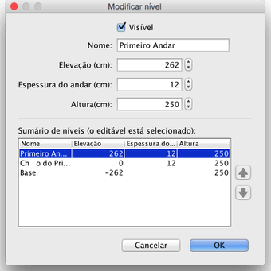

Você pode editar o nome, a elevação e altura de um nível clicando duas vezes em sua aba, ou escolhendo Plano > Modificar nível... na barra de menu.
O painel de modificação de nível permite a edição dos atributos, e mostra também uma tabela
descrevendo todos os níveis da casa onde a linha selecionada corresponde ao nível que está sendo editado.

A espessura do piso é usada para calcular a borda vertical ao redor do piso na Vista 3D. Esta superfície é visível através de aberturas no piso e nas bordas de um mesanino ou balcão.
A elevação
de um nível pode ser positiva ou negativa. No último caso, o terreno será automaticamente rebaixado na Vista 3D para cada peça de mobília, cômodo ou conjunto fechado de paredes adicionado ao nível subsolo. Esta característica pode ser usada para criar uma piscina no terreno ou para criar um porão com um ou mais níveis. |